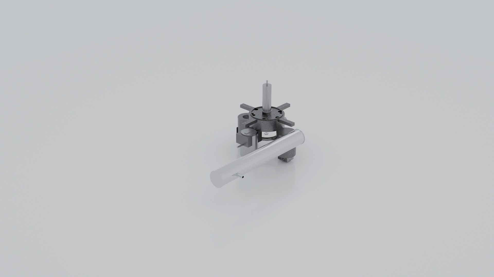
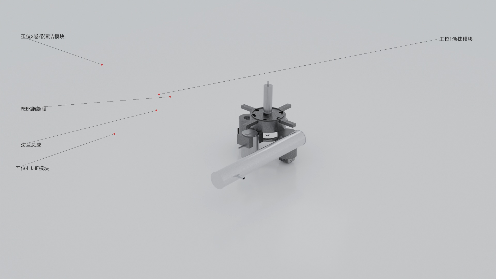
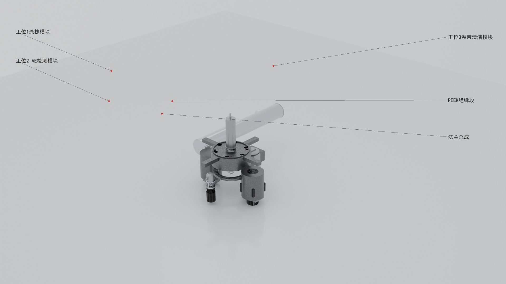
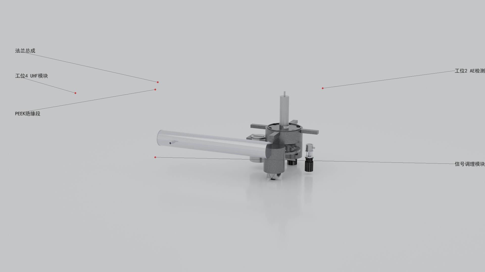
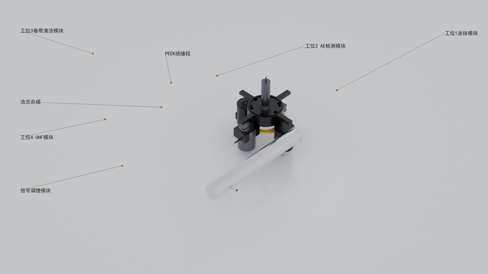
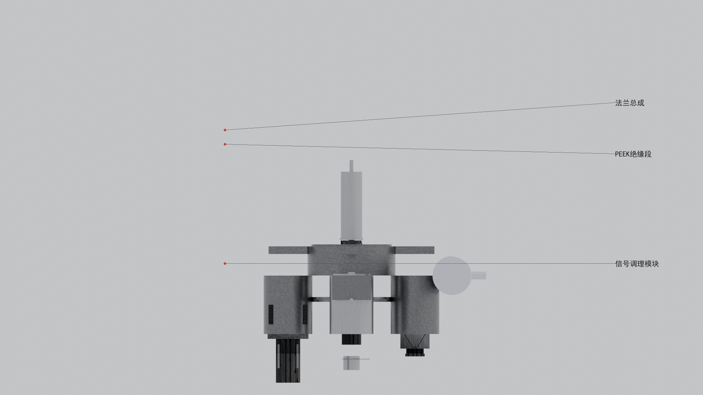
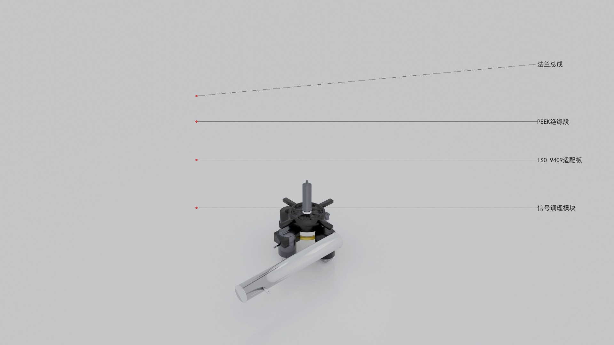
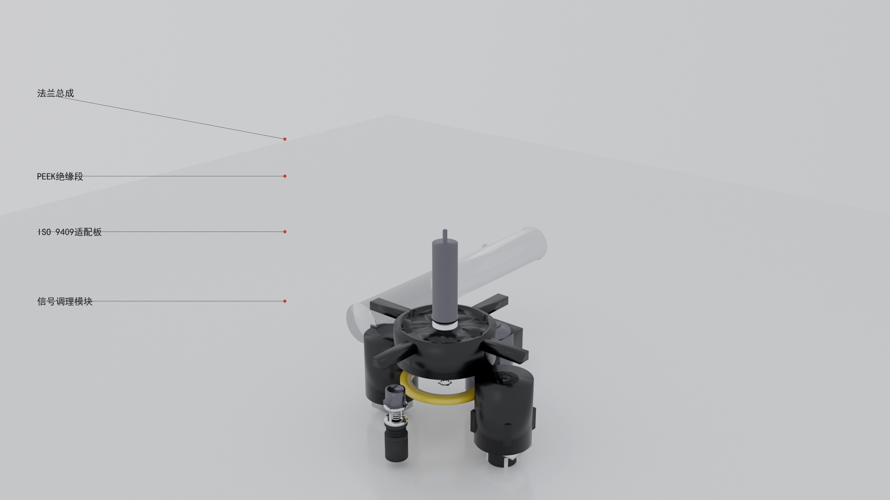

×
从 CAD 设计文档到照片级渲染图，端到端 AI 增强 + LLM 评分自动验收闭环。
本项目把工程师的 设计文档（中文 Markdown）转换为可交付的 照片级 3D 渲染图，跨 6 阶段管线（spec → codegen → build → render → enhance → annotate/deliver），AI 评分自动验收闭环把人工 review 成本降至最低。Windows-only，CAD 后端走 SolidWorks/CadQuery，渲染走 Blender，AI 增强走多 backend（gemini/fal/comfyui/engineering），评分走 OpenAI 兼容 vision LLM。
从 SPEC（人写中文 Markdown）到 DELIVER（外行可验收照片级交付），每阶段独立验证。
工程师写一份 CAD_SPEC.md（中文），含产品意图、零件清单 BOM、装配关系、特征列表。cad-spec-gen project-guide --product-goal "做升降平台" 多轮渐进 wizard 帮忙补 KPI。
CAD_SPEC.md — 设计意图 + BOM + featuresDESIGN_REVIEW.json — 5 角色自动审查PROJECT_GUIDE.json — 多轮 KPI 收集matches_spec_features.json — v2.37 加，jury 评分对账用从 CAD_SPEC.md 自动生成 CadQuery / Build123d 脚本（params.py + build_all.py），调用模型库（GB/JIS/DIN 标准件 + 自制件几何）。
params.py + build_all.pycustom_parts_audit.py 503 行审计 + 12 测试CadQuery 跑 build_all.py 产 STEP + GLB；assembly placement 计算每件 world transform；GATE-3.5 装配校验防 placement collapse。
ASSEMBLY_REPORT.json — placement / 实例 / instance_idBlender 渲染 7 标准视角（front_iso / rear_oblique / side / exploded / ortho / cross_section / section_side），用 SW Toolbox 真材质（如有）或 PBR 替代。render_manifest.json 记 visible_instance_ids 作多视角实例证据。
V1-V7_*.png — 7 视角 1920×1080render_manifest.json v2 — 多视角 evidence渲染图 → AI backend 增强（gemini_chat_image / fal / comfyui / engineering 4 backend）→ vision LLM 评分（jury）→ 分数 < 60 阈值按反馈自动重试一次 → 选高分张交付。SP1 jury→prompt 闭环已完工 CP-0~CP-8。
V*_enhanced.jpg — 照片级ENHANCEMENT_REPORT.json + loop_summary<V>_enhance_meta.json — 视角明细单PHOTO3D_JURY_REPORT.json — vision LLM 评分labeled cn/en 自动标注 7 视角；photo3d-deliver 打包 delivery/README.md 外行验收页（头条徽章 + 内嵌图 + 复核状态表 + 下一步）。
V*_labeled_cn.jpg + V*_labeled_en.jpgdelivery/ 包（含 README.md 外行验收页）DELIVERY_PACKAGE.json — 含 view_evidence 字段v2.37 系列 cleanup 周期（spec → plan → execute → review → merge），连续 15 PR 一次过 CI。
| 项 | 内容 | 状态 | PR |
|---|---|---|---|
F1 | mock helper 抽取 | closed | v2.37.3 / #81 |
F2 | line 105 注释扩 rationale | closed | v2.37.3 / #81 |
f3 | CLAUDE.md spec mini-glossary | closed | v2.37.5 / #83 |
f5 | cad-jury-config §12 输出字段语义 | closed | v2.37.4 / #82 |
f6 | cad-jury-config §13 版本承诺 | closed | v2.37.4 / #82 |
f1 | max_tokens sunset 条件 | 未闭合 | — |
f2 | spec memory inline 摘要 | 未闭合 | — |
f4 | N≥50 批量成本评估 | 未闭合 | — |
v2.36 自制件质量大修 end_effector 子系统，7 视角 photo3d-jury 真金评分（micuapi.ai gpt-image-2-pro，cost $0.07）。

$0.07 USD（budget $0.20，2.5× 余量）gpt-image-2-prolabeled cn/en 是 deliver 阶段自动产物；BOM 件号叠在 enhanced 图上方便外行核对。点击图查看大图。







spec → plan → execute → review → merge 全程纪律。连续 15 PR 一次过 CI 8/8 的工程实证。
每层抓不同 bug 类别。layer 1-4 静态分析；layer 5 是 5 角色并行 adversarial；layer 6 是 writing-plans 入口 scout grep 实际代码验证 spec 假设。
主 agent 每 plan task 派发 fresh subagent；2 阶段 review（spec compliance + code quality）；fresh context 防污染。15 PR 连续一次过 CI 实证。
| 阶段 | 角色 | 关键产物 | 纪律 |
|---|---|---|---|
| brainstorming | 主 agent | spec doc / 设计决策表 D1-Dn | HARD-GATE 必走 / 一次问一个 / YAGNI |
| writing-plans | 主 agent | plan 含 4-7 task / 每 step 2-5 min | 无 placeholder / type consistency / spec coverage |
| execute Task N | fresh subagent | code + test commit | TDD RED→GREEN→REFACTOR / 显式 R 步 |
| spec compliance review | fresh subagent | ✅ / ❌ findings | 不信 implementer report / 独立 grep 验证 |
| code quality review | fresh subagent | Strengths / Issues / Assessment | spec compliance ✓ 后才跑 |
| merge + retro | 主 agent | PR + retro doc + memory | lesson 沉淀进 memory 跨 PR 复用 |
| 类别 | 典型表现 | 防御 |
|---|---|---|
| (a) API 不存在 | spec 引用的 function/class 实际不存在 | plan task 0 grep 验证 |
| (b) 路径假设错 | spec 写 `cad//` 实际是 `01_spec/` | plan task 0 cat 实测 JSON schema |
| (c) 测试 helper 误用 | 抄 fixture 但 conftest 不收 / marker 未注册 | 看 conftest + pyproject markers 再用 |
| (d) 实现细节 bug | 逻辑错 / 边界处理漏 | edge-case hunter + 5 角色 review |
| (e) 参数签名漂 | spec 给 kwargs 实际是 positional | grep 实际 signature 验证 |
v2.37.5 加进 CLAUDE.md 的 10 项核心术语 + 文档地图。
pyproject.toml（停留 2.24.0）。用户 pip install git+https://...@vX.Y.Z。tools/jury/*.py = canonical（git tracked）；src/cad_spec_gen/data/tools/jury/*.py = mirror（gitignored，scripts/dev_sync.py 同步）。hatch_build COPY_DIRS 打包。grep -v）或 indent-anchor；OR pattern 用 grep -cE "X|Y" 显式 ERE 跨平台可靠。sw-smoke.yml 的 actions/upload-artifact@v7 步是已知 transient flake；与 tests.yml 8 job release gate 无关。| 类别 | 路径 | 用途 |
|---|---|---|
| 项目规范 | CLAUDE.md | 开发流程 / TDD / 中文规范 / 术语 glossary |
| 用户 doc | docs/cad-jury-config.md | jury 配置 + §12 输出语义 + §13 版本承诺 |
| 用户 doc | docs/jury-loop-config.md | enhance.jury_loop 自动重试闭环 |
| 用户 doc | docs/cad-help-guide-zh.md | cad-spec-gen 完整用户指南（中文） |
| 设计 | docs/superpowers/specs/ | 每 feature 一份 design doc |
| 实施 | docs/superpowers/plans/ | 每 spec 一份 plan doc（4-7 task） |
| 沉淀 | docs/superpowers/reports/ | 每 PR 一份 retro doc（lessons + §11/§12 follow-up） |
| STATUS | docs/superpowers/JURY_MATCHES_SPEC_STATUS.md | v2.37 jury 模块累计 status + §11 follow-up 表 |
主 agent session memory 在 ~/.claude/projects/D--Work-cad-spec-gen/memory/（本仓 maintainer 本机；其他开发者本机路径相对应）。MEMORY.md 是索引，每条 memory 一行。关键近期：
project_gisbot_jury_e2e_done.md — 2026-05-15 Tier 2 GISBOT 真金 e2eproject_v2_37_5_done.md — 2026-05-15 CLAUDE.md glossaryproject_v2_37_4_done.md — 2026-05-14 cad-jury-config §12+§13project_v2_37_3_done.md — 2026-05-14 mock helper + line rationaleproject_v2_37_2_done.md — 2026-05-14 6-key + max_tokens 1024project_north_star.md — 北极星 5 gate 拍板源feedback_spec_review_4layers.md — spec ≥ 100 行 4 层审查feedback_subagent_driven_main_agent_scouts.md — scout grep 教训